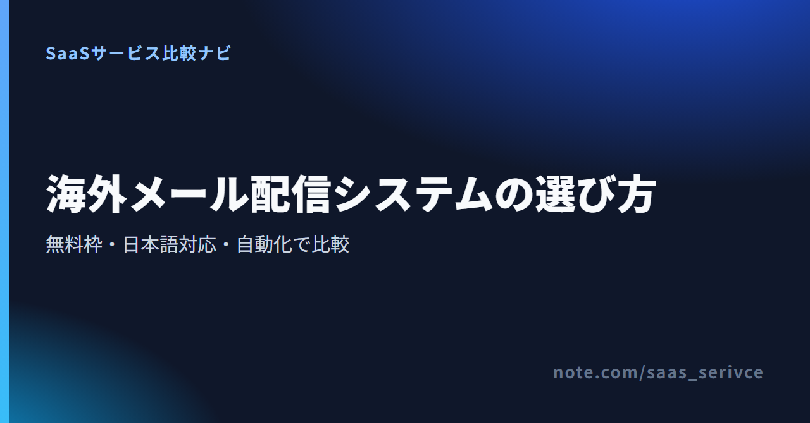
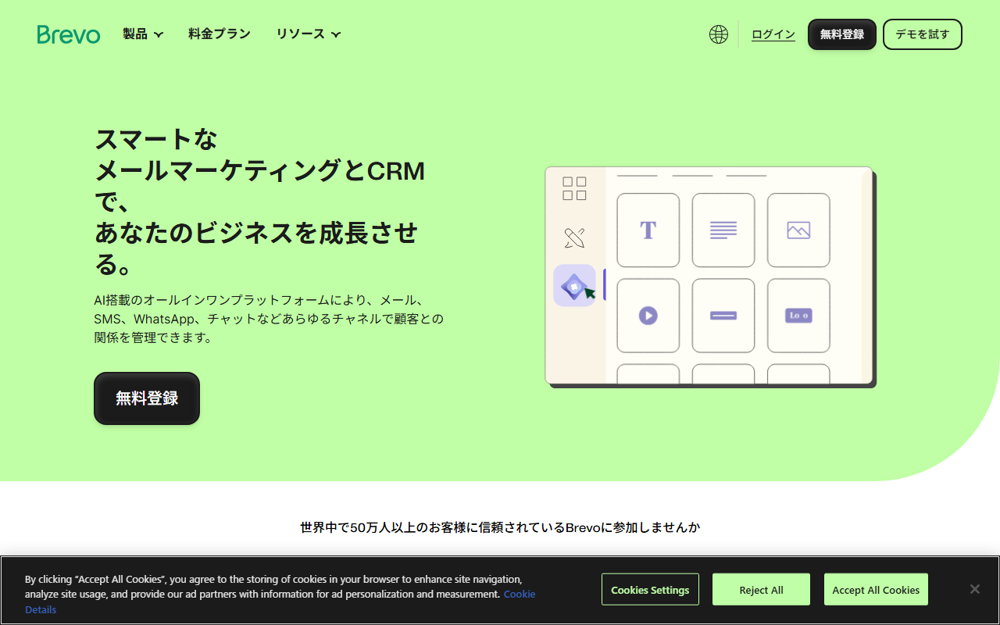
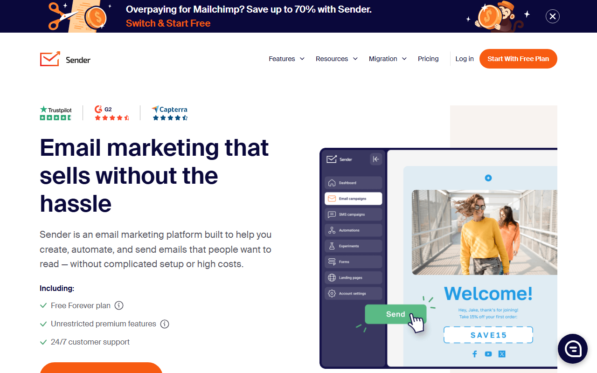
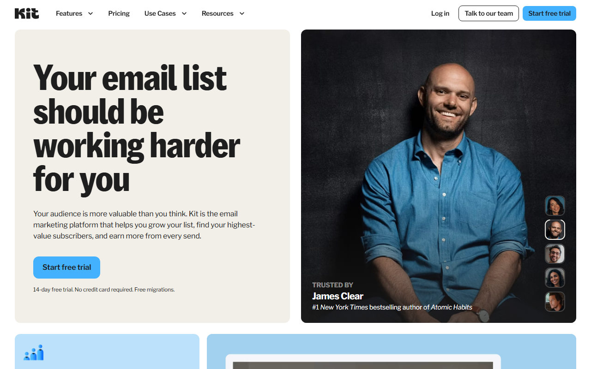
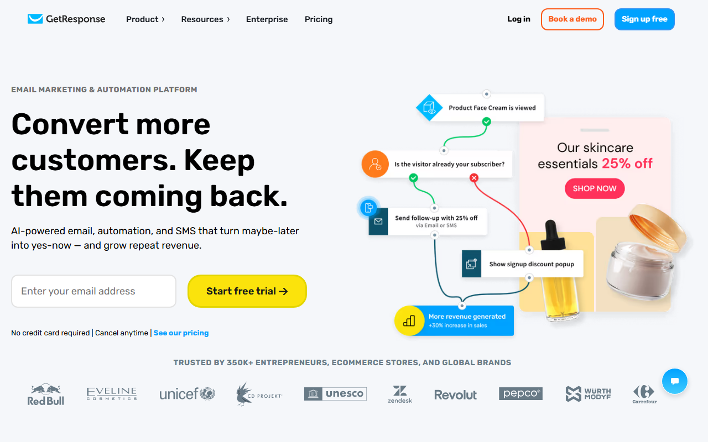
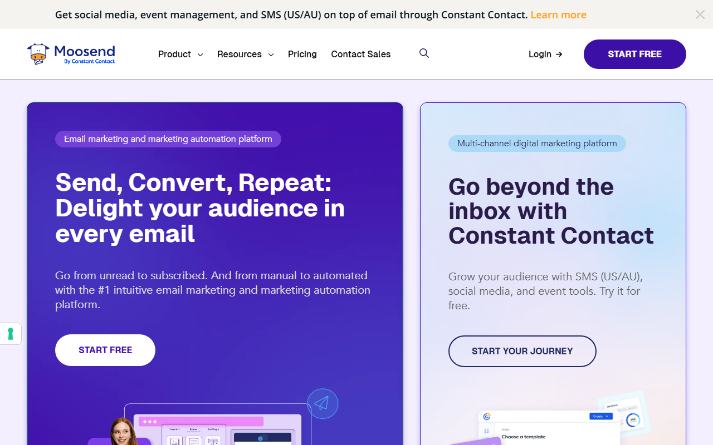
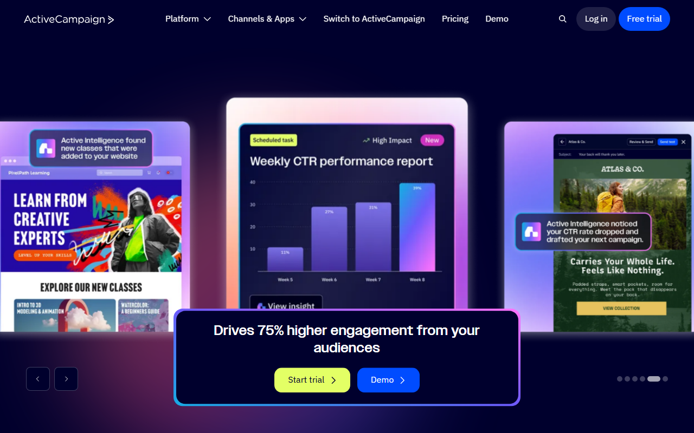
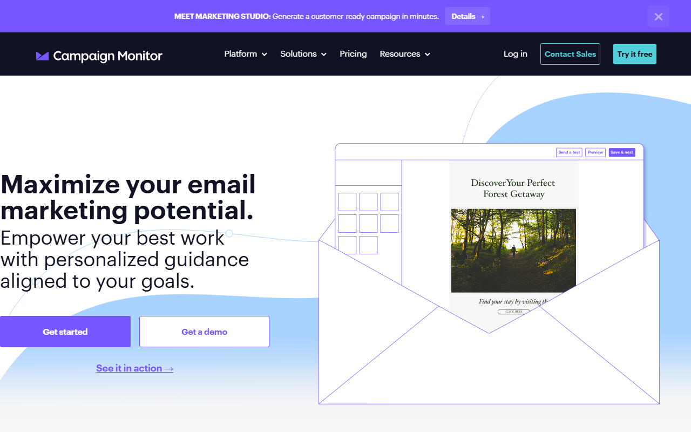

メール配信システムは、メルマガの作成から効果測定までを一元管理するサービスです。宛先管理や一斉配信にも対応します。
海外7サービスは、無料枠や課金単位、日本語対応が異なります。この記事では料金と自動化機能を比べ、支払いや解約の条件も紹介します。
迷ったらBrevoがおすすめです。公式サイトは日本語で、Freeなら1日300通・連絡先最大100,000件まで使えます。
日本語の製品概要から無料登録と料金プランへ進めます。
「メール配信システム」「メール配信サービス」「メール配信ツール」は、本記事では同じ意味で使います。いずれも、配信から分析までを一元管理し、自動化にも対応するクラウドサービス。API・SMTPによる送信だけを提供するサービスは比較対象に含めません。
連絡先数と1人あたりの月間配信回数から総送信数を出し、同じ請求周期で比べます。Senderは人数と送信数の両方で料金が変わり、Kitはsubscriber数に応じて料金が変わります。
BrevoとSenderには恒久無料プランがあります。KitとGetResponseも同様。残る3社は期限付きトライアルなので、試用期間と終了後の扱いを見ます。
メール配信以外に、フォームやLPが必要かを先に決めます。無料で幅広い機能を試すなら、候補はSender。読者管理と販売まで一つにまとめるならKit、複数ステップの自動化ならActiveCampaignが向きます。
日本語サイトがあっても、管理画面や問い合わせ窓口まで日本語とは限りません。Brevoが対応するのは日本語サイトのみ。SenderとGetResponseのUIは日本語非対応で、ActiveCampaignも同じです。残る3社は、公式情報から日本語対応の有無を判断できません。
独自ドメイン認証と配信停止リンクの設定手順を各社のヘルプで確認します。
まずは無料条件と料金の仕組みから、7サービスの違いを紹介します。日本語で使える範囲や支払い・請求の条件、どんな人に向くかも取り上げます。掲載順は、無料枠から有料プランや組織での契約へと進む流れ。人気ランキング順ではありません。

公式サイトは日本語に対応し、画面上部と中央に無料登録への入口があります。
無料枠は1日300通。月間通数による制限ではありません。全員へ同じ日に送るなら、1日300通で足りるかを見ます。Freeは4か月に1度もログインしないと削除対象になります。
無料登録への入口と料金プランの案内を日本語で確認できます。
クレジットカードとデビットカードのほか、PayPalに対応しています。ただし、対応するカードブランドや発行国は明記されておらず、日本発行カードの可否も不明です。

画面は英語で、無料プランを始めるボタンとメール作成画面の例が表示されています。
Freeはカード不要で、Senderロゴが表示されます。Standardは3 seats、Professionalは10 seatsです。
無料プランの開始画面と、Standard・Professionalの料金ページへ進めます。
有料プランの支払い方法は、クレジットカードまたはデビットカード。PDF請求書も取得できます。解約しても契約期間末までは利用できますが、未使用期間や更新忘れは通常返金の対象外です。公開されているUI言語一覧にも、日本語は含まれていません。

トップページから、カード不要の14日間無料トライアルへ進めます。
Creatorでは自動化とシーケンス、Proでは無制限ユーザーと高度な分析が加わります。有料プランの料金は、1年後の読者数でも試算しておきます。
無料トライアルの条件と、登録者数に応じた料金を試算できます。
Freeにもサポートがあり、受信順で24時間以内の返信が目安です。Creator以上は24時間365日のメール・チャット、Proでは優先対応。日本語UIと日本語窓口の有無は、公式情報から判断できません。

画面には「Sign up free」と無料トライアルの入力欄が並びます。
日本語UIと有人サポートは非対応です。PayPalの対応国一覧に日本はなく、解約後の既払金は原則返金されません。
無料登録の入口と、Starter・Marketer・Creatorの料金を確認できます。
無料アカウントと有料機能トライアルは別の仕組みです。14日後も無料枠を使うなら、連絡先数と月間メッセージ数の上限を見ます。

画面右上と製品紹介欄に、無料で始めるボタンがあります。
定期配信ならPro、まとまった数を不定期に送るならPay-as-you-goも含めて総額を計算します。
30日間トライアルの開始画面と、Pro・従量課金の料金案内へ進めます。
月払いはいつでも解約でき、管理画面からPDF形式の請求書を取得できます。ダウングレードが反映されるのは、現在の請求サイクル終了時。ただし、支払済み料金は原則返金されず、日本語UIの有無も公式情報からは判断できません。

無料トライアルとデモへの入口が画面上部と中央に並んでいます。
複数ステップの自動化が必要なら、ActiveCampaignが候補です。料金画面では連絡先数と通貨を選び、請求周期も自社の条件に合わせます。
無料トライアルとデモの入口から、各プランの機能差を確認できます。
VisaとMastercardに加え、American Expressにも対応します。カードの発行国制限は明記されておらず、初回購入者向けの30日間返金保証には適用条件があります。

「Try it free」と「Get a demo」のボタンが表示されています。
Liteはメール対応。Essentialsは優先メールで、Premierは最優先・電話対応となります。組織で契約する場合は、Enterpriseの見積もりと請求方法も比べます。
無料試用の入口と、Lite・Essentials・Premierの料金ページへ進めます。
取引ごとのTax Invoiceを取得でき、月額契約は次回請求前に停止できます。支払済み料金は原則返金の対象外。日本語UIとサポートの有無は不明で、日本発行カードやJCBの対応も公式情報からは判断できません。
無料で使えるサービスを比べるときは、期限なく使えるプランと期間限定トライアルを分けます。500人へ月4回送ると月2,000通になるため、この条件を各社の連絡先上限や送信上限に当てはめます。
登録できる人数が多くても、希望する頻度で配信できるとは限りません。無料枠を使って、本番配信に進むサービスを絞ります。
MoosendとCampaign Monitorは30日、ActiveCampaignは14日の試用です。3社ともカードは不要。ただし、試用終了後も同じ条件で無料利用を続けられるプランではありません。Moosendは最大1,000 contactsまで。Campaign Monitorは500 contacts・500 emailsまでです。
次のどれかに当てはまったら、有料化を検討します。
有料化しても、成果や到達率が保証されるわけではありません。
海外SaaSは、同じ月額表示でも課金対象が異なり、請求周期も一律ではありません。各社が公開する代表価格は条件がそろわないため、本記事では価格順位を付けません。
まず「500 contacts・月4回配信」のように自社の条件を固定し、請求周期をそろえて見積もります。Senderの$6.30は、初年度の年払い額を月額に直したもの。Campaign MonitorとActiveCampaignの掲載額も年払いです。一方、GetResponseの掲載額は月払い。Kitは登録者数に応じた段階課金で、Moosendには従量課金もあります。
円換算には1ドル=158円（執筆時点の目安。為替で変動）を使います。BrevoのStarter月$9は約1,422円。ActiveCampaignのStarter月$15は約2,370円です。ただし、対象連絡先数と請求周期が異なるため、この2額だけで安さは決められません。
BrevoとSenderは、公式情報では日本発行カードを使えるか分かりません。ActiveCampaignとCampaign Monitorも同様です。
海外サービスの税区分や仕入税額控除の扱いは契約主体によって異なります。必要に応じて税理士へ相談してください。
Brevoには日本語サイトがありますが、管理画面とサポートは日本語非対応です。SenderとGetResponseでは日本語UIを選べず、ActiveCampaignも同じ。KitとMoosend、Campaign Monitorは、日本語対応の有無が公式情報からは分かりません。試用時から、英語での初期設定や問い合わせを見込んでおきます。
サービスを決める前に、独自ドメイン認証に加えて配信停止とテスト送信の設定方法をヘルプで調べます。候補間で料金が近い場合は、担当者が自力で設定できるかを比べます。
SPF・DKIM・DMARCの設定値はサービスごとに異なります。Gmailの送信者向けガイドラインと各社ヘルプを照合し、DNSへ設定を反映します。「認証済み」と表示されるところまでが導入作業です。
広告・宣伝メールを送る前に、次の項目を点検します。
特定電子メール法と特定商取引法の公式案内を読み、自社の取得経路とメール内容に当てはめます。
送信先は、自分や社内の担当者が使う複数のアドレス。差出人名と本文のリンクを点検し、配信停止の動作やスマートフォンでの表示も試します。到達率はリスト品質や送信履歴にも左右されるため、サービス名だけでは判断できません。
日本語UIの有無と、日本から契約・決済できるかは別の条件です。
GetResponseは日本語UIがなくてもJCBを含む決済手段を明記しています。契約前に調べるのは、管理画面の言語だけではありません。請求通貨や支払い方法に加え、請求書の形式とサポート言語も別に見てください。
配信規模と担当人数をそろえ、2〜3サービスの無料枠やトライアルを比べると違いが分かります。操作感や到達率は、同じ宛先リストで少量配信して判断します。
最初に書き出すのは、連絡先数と月間送信数です。担当人数と必要な自動化も決めておきます。
書き出した条件で無料枠を試します。年払いへ切り替える前に調べたいのは、日本語で使える範囲と請求書の条件。解約・返金条件まで見れば、表示価格だけで選ぶ失敗を避けられます。
日本語サイトから無料登録へ進み、1日300通の範囲で配信を試せます。
もっと詳しく比較したい方へ